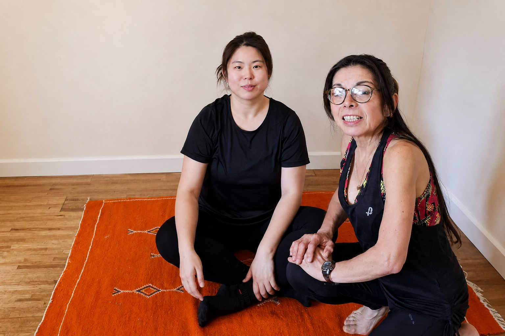
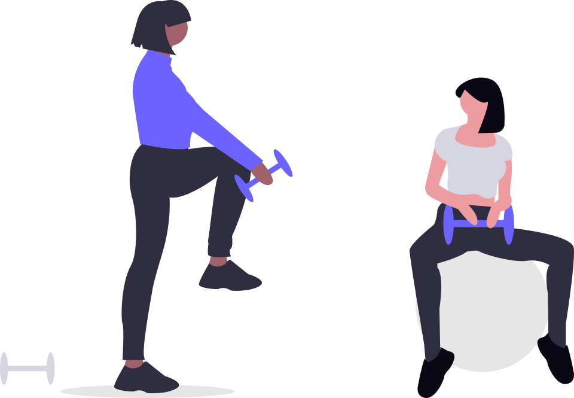
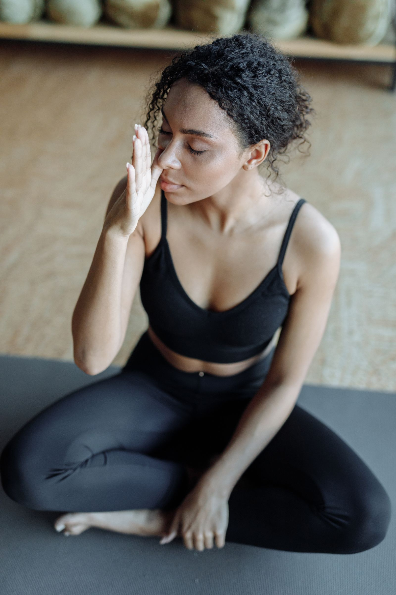
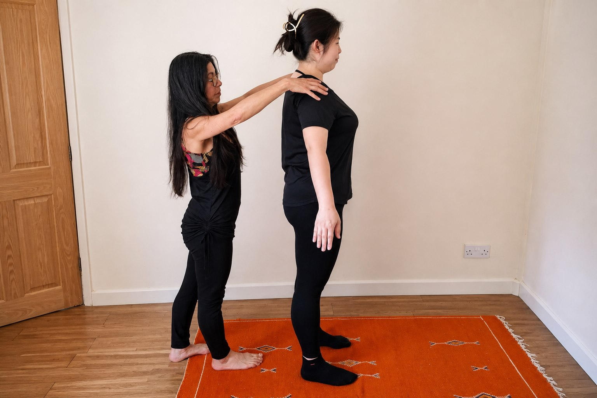
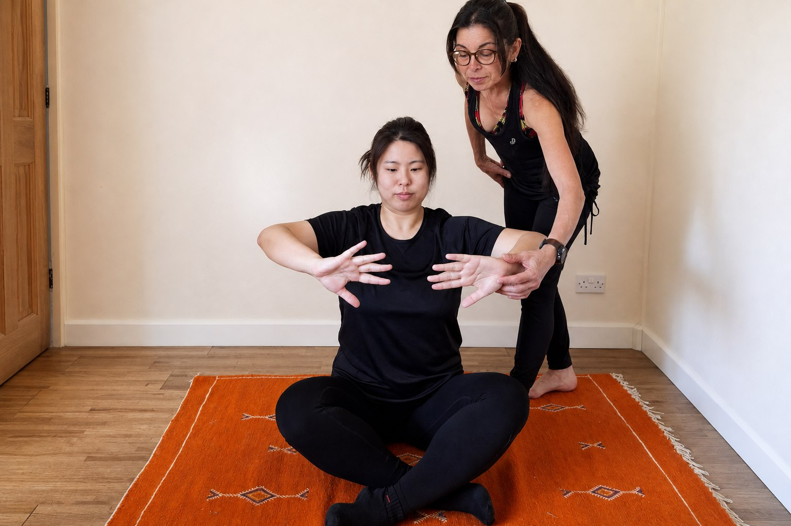
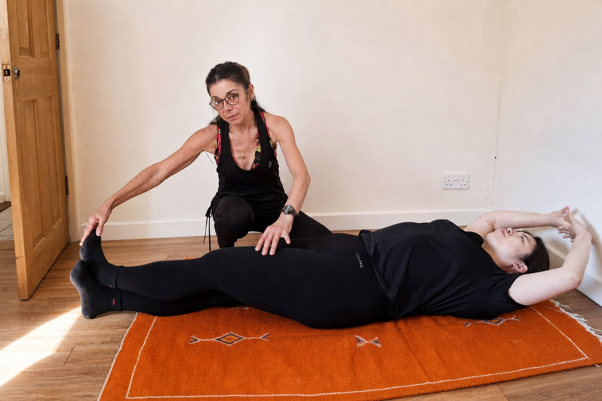

Possible starting point
Explore it if you want to:
- Learn the basics with clear, individual guidance.
- Practise posture and breathing at a manageable pace.
- Ask questions while you build core awareness.
Hypopressive training in Nottinghamshire
A calm, guided way to practise posture, breathing and controlled movement. Sessions are adapted to your experience and comfort level, with time to ask questions and learn at a manageable pace.
Start with the basics. Progress only when the next step feels clear.

Real session imageThe three-part foundation
One connected sequence: find a position, explore the cues, then repeat the basics at a manageable pace.

Start with clear guidance on a position you can understand.
Work through the cues at a pace that feels manageable.
Repeat the basics and build familiarity without rushing.
Quick facts
Here is the information currently confirmed about the approach. Practical session details will be added when they are confirmed for publication.
Session duration, price, format, location and availability are not yet published.
Who it may suit
You do not need to arrive with a diagnosis. You may simply be new to hypopressives, returning to movement after childbirth or menopause, or looking for individual guidance on posture, breathing and core awareness. If a symptom is what brought you here, use the signpost below before considering training.
Start with the question
People often start with a change they cannot quite name. The list below is for deciding what to ask, not for self-diagnosis.
First step: if any symptom is familiar, use the NHS guidance or ask a healthcare professional before booking. Different causes need different support.

A simple signpost
This pathway is a reminder to check suitability, not a diagnosis or medical screening tool.
Read the basics and bring your questions.
Consider the published boundaries before you enquire.
Get individual advice if you are pregnant or have symptoms, recent surgery or another concern.
Use the confirmed booking route when it is available.
How it works
The session follows a simple sequence, with guidance and time to check how each step feels.
Begin
Talk through what you want to learn and your comfort level.

Learn
Work through one position at a time with clear explanations.

Practise
Repeat the basics and progress at a manageable pace.

About the instructor
The instructor’s name, qualifications and experience have not yet been confirmed for publication. Those details should be added before the site launches.
Until then, this page describes the training service without making claims about professional credentials or clinical outcomes.

The illustration shows the pelvic diaphragm from above, with the surrounding pelvic bones, muscles and openings labelled. It is an anatomy reference only; it does not show a hypopressive exercise or indicate whether a particular exercise is suitable for you.
The method in plain English
Hypopressive training combines posture, breathing and gentle controlled movement. You learn one position at a time, with clear guidance on technique and pace. The image beside this text is general anatomy information, not a picture of the method.
Find a position that you can understand and practise comfortably.
Learn the breathing cues with time to pause, ask and repeat.
Build familiarity one step at a time, without rushing the process.
FAQs
No. The current approach is designed to be taught step by step.
Session duration has not yet been confirmed for publication.
Pricing has not yet been confirmed for publication.
The session format has not yet been confirmed for publication.
The specific venue or service area has not yet been confirmed for publication.
Comfortable clothing that lets you move and breathe easily is a sensible starting point. Confirm any venue-specific guidance before attending.
The enquiry and booking process has not yet been confirmed for publication.
Suitability depends on the individual. If you are pregnant or have symptoms, pelvic pain, prolapse, a medical condition, recent surgery, back pain or another concern, speak to a qualified healthcare professional first.
Cancellation and rescheduling information has not yet been confirmed.
An expected reply time has not yet been confirmed.
Questions and booking
Ask a question or check availability before deciding whether to book. A confirmed contact route and booking process will be added here before launch.
Please do not include private health information in an initial enquiry.